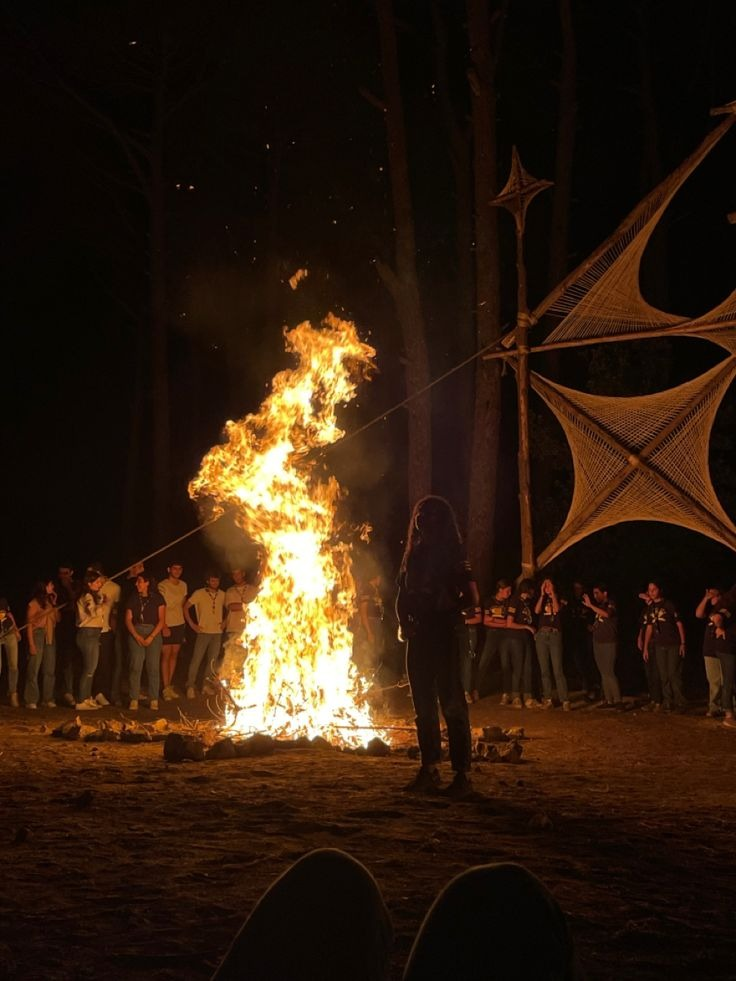
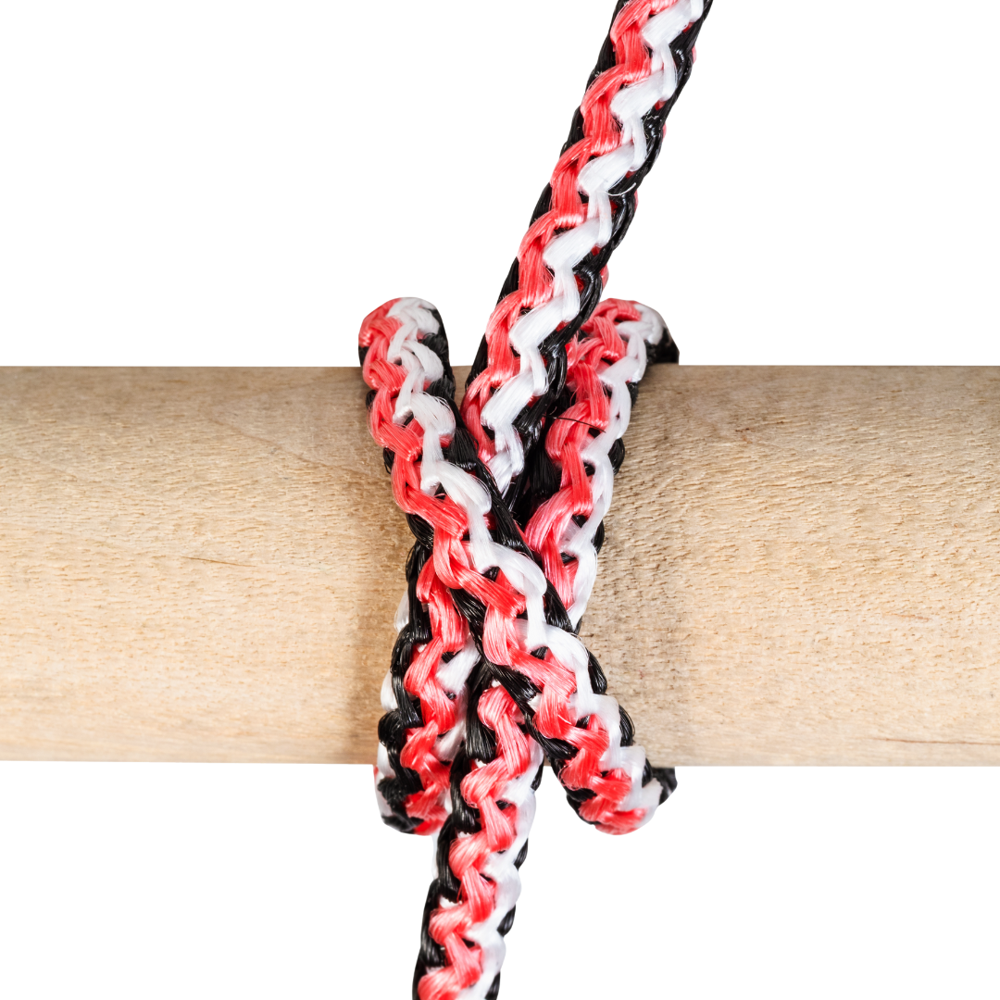

Comunidad Marcelo Callo
Home
Menu
Ramas Scouts
¿Cómo hacer un proyecto?
¿A dónde vamos?

Espiritu Scout
¿Qué es el Espiritu Scout?

Vida al Aire Libre
¿Qué es Vida al Aire Libre?
Proyectos.
¿Qué es un Proyecto?